7 MARCAS. 7 DÍAS.
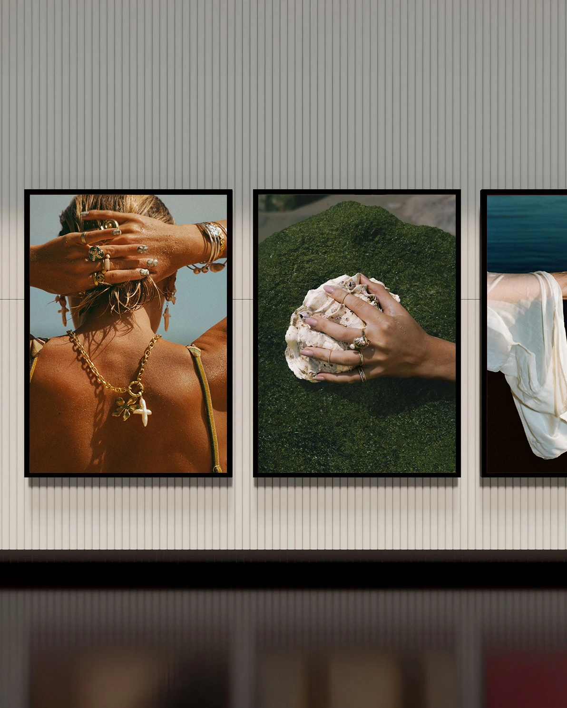
Siete días. Siete marcas. Siete formas de empezar de cero. Un reto personal para explorar ideas, construir identidades y experimentar distintos lenguajes visuales.
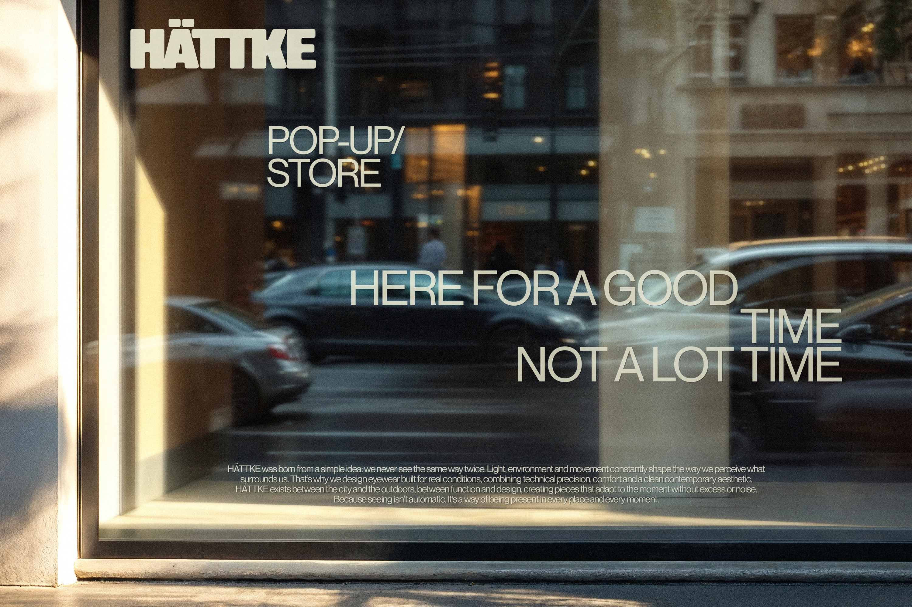
Cada marca nació de un concepto diferente, lo que permitió explorar distintos territorios visuales, desde la cultura urbana hasta la gastronomía, el deporte o el cuidado personal.
- ( 01 ) MARCA NO. 01 Nocta Run Club Un run club urbano para quienes corren por algo más que correr.
- ( 02 ) MARCA NO. 02 Sedici Materia, texturas y una estética esencial.
- ( 03 ) MARCA NO. 03 Huā Market Un market 24 horas que no quiere parecerse a un market.
- ( 04 ) MARCA NO. 04 Hättke Gafas técnicas y una identidad que no pide permiso.
- ( 05 ) MARCA NO. 05 Casa Burrata Mesa compartida, vino y cocina mediterránea.
- ( 06 ) MARCA NO. 06 Graze Ink Un estudio de tatuaje con mucho cuidado en los detalles.
- ( 07 ) MARCA NO. 07 Instruct Dog Un día de cuidado para tu perro, contado paso a paso.
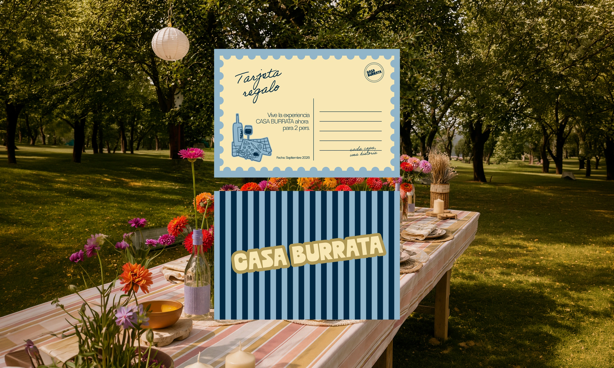
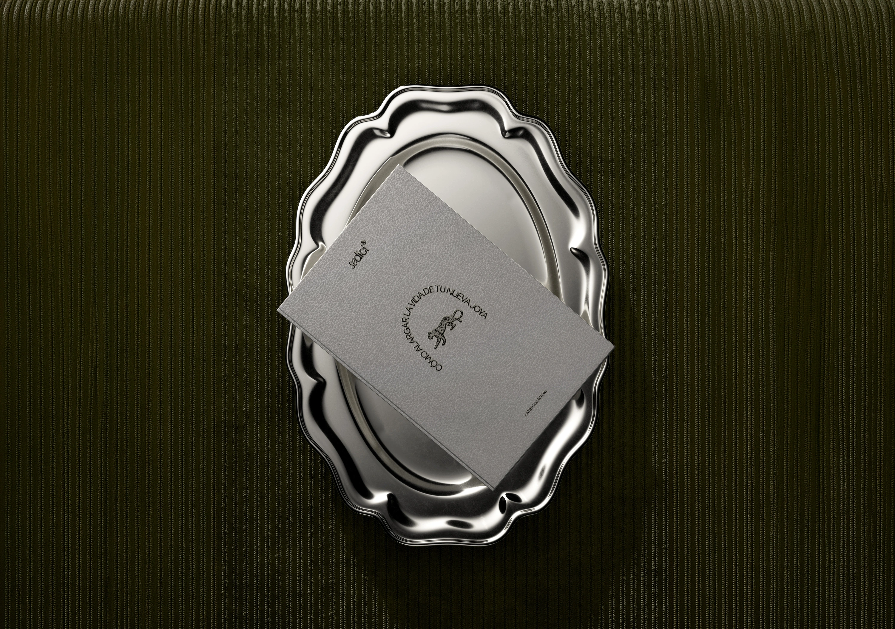
Una idea puede tomar muchas formas. Aquí fueron siete. Siete marcas, siete universos y siete maneras de convertir una primera idea en algo que se pueda ver, sentir y reconocer.
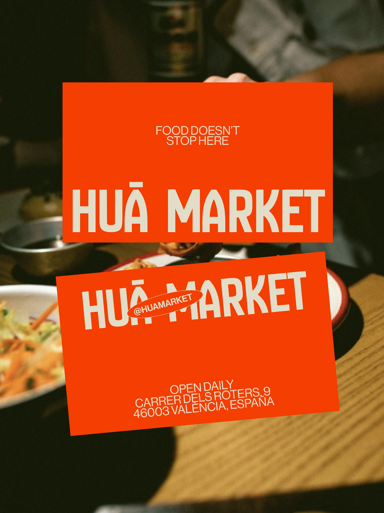
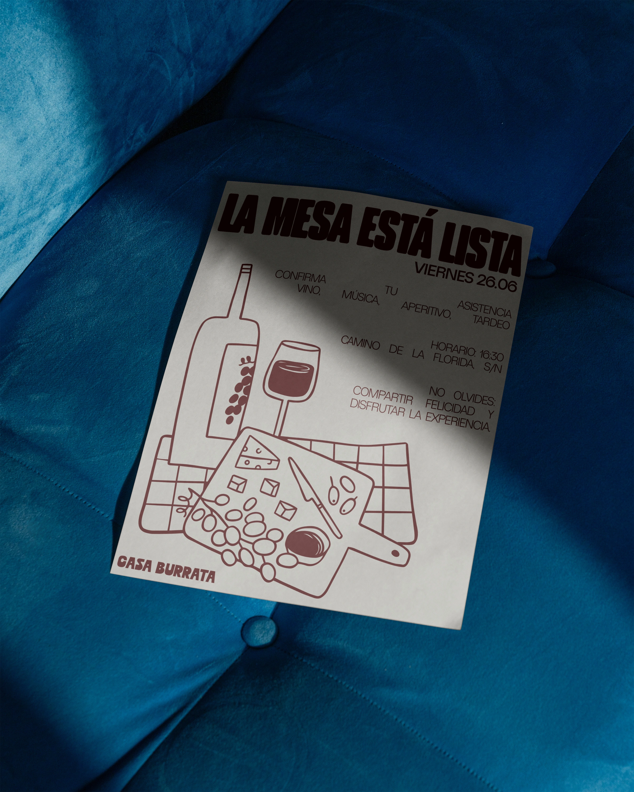
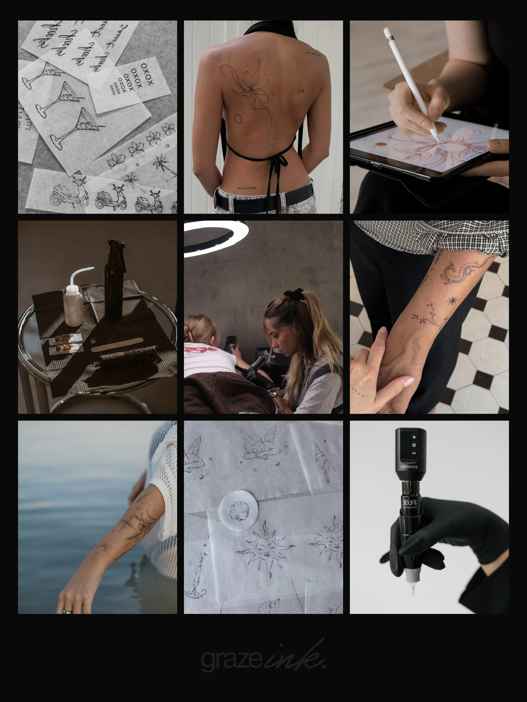
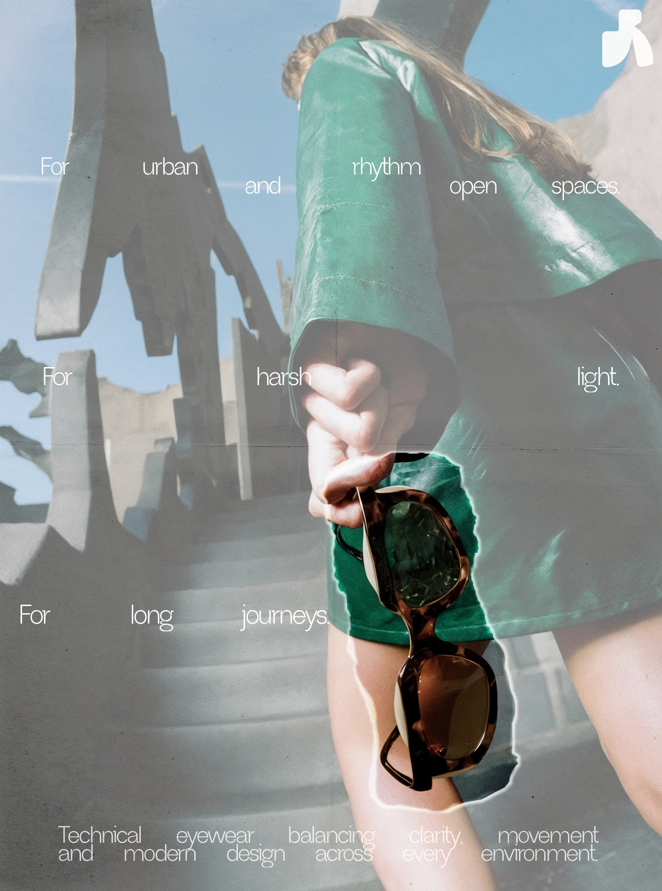
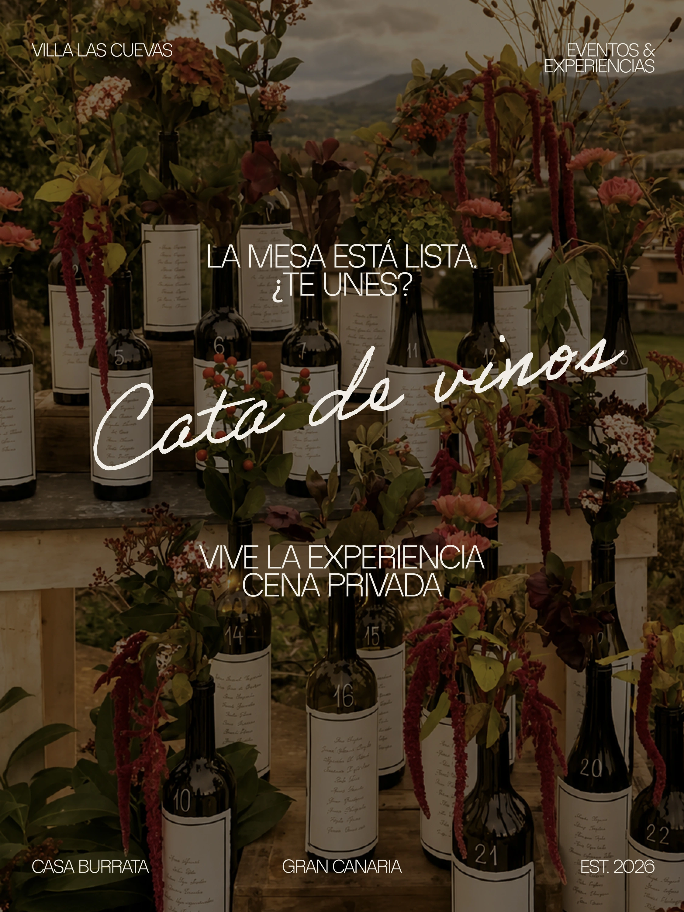
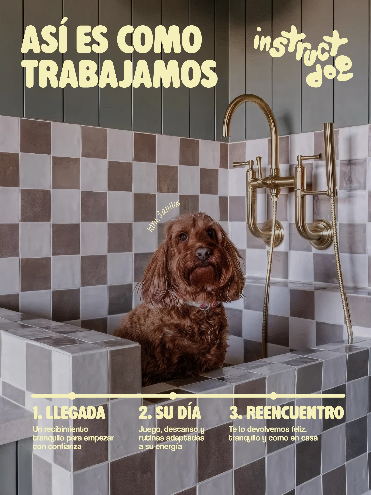
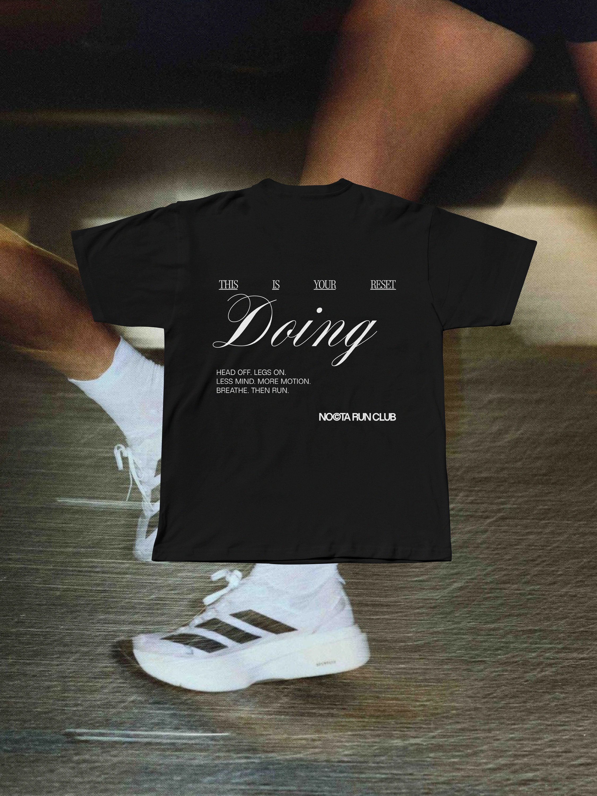
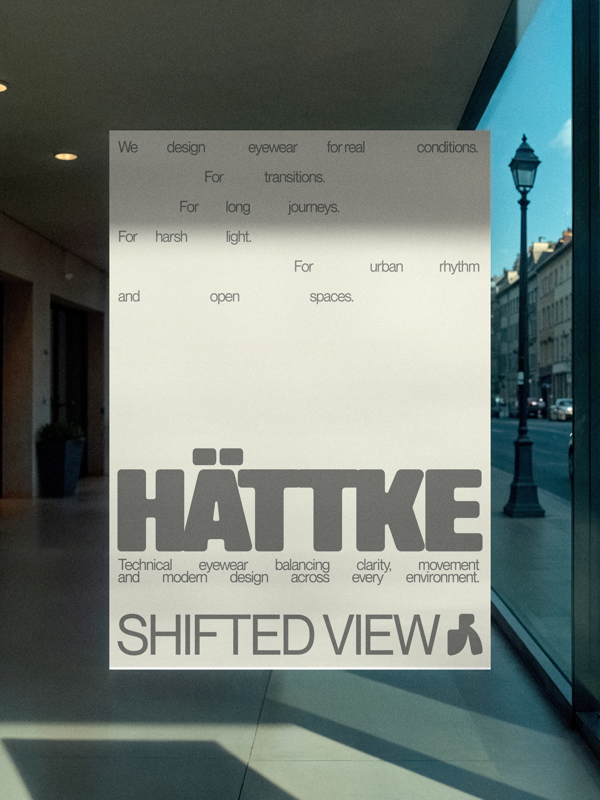
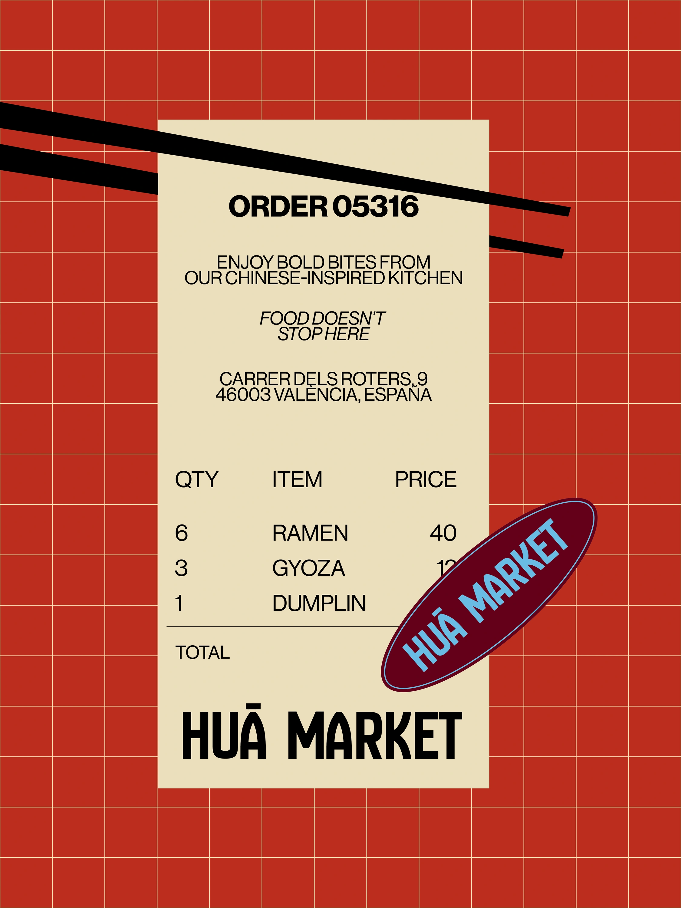
Este proyecto también vive en Instagram. Si quieres conocer el proceso completo, descubrir más detalles y ver cómo fue tomando forma, puedes seguirlo allí.
Ver el proyecto en Instagram →